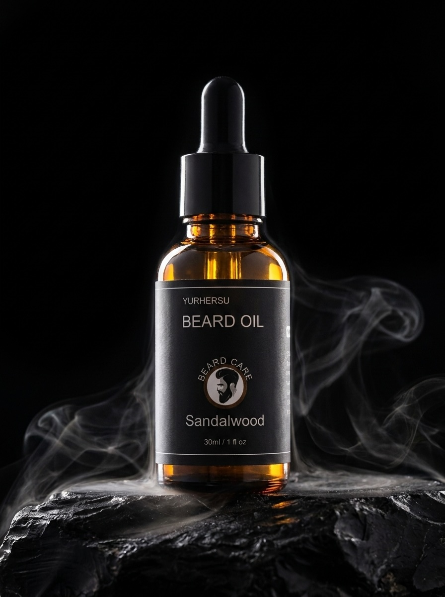

I have a note on my phone called "beard attempts." It has four entries. Each one ends the same way: shaved it. looked patchy again.
I'm not someone who gives up easily. I grew each one for 6 to 8 weeks, which takes more discipline than most people think. But every single time, the same spots — same two patches on my cheeks — would stay thin and rough while everything else filled in. The beard looked unfinished. Like I'd forgotten to shave rather than made a choice.
My barber said it was genetics. My dad confirmed it — same patches, same spots. I accepted it the way you accept being slightly shorter than you wanted to be. Just the hand you got.
Except I was wrong. And so was my barber.
The thing nobody told me about beard hair
About six months ago I was complaining about this to a friend who works in cosmetic chemistry. He listened for about thirty seconds before he cut me off.
"Your beard isn't thin. It's dry. Those are completely different problems."
He explained something that sounds obvious once you hear it but had never once crossed my mind: dry hair and sparse hair look almost identical. When beard hair is dehydrated, each strand loses its body, lies flat against your face, and separates. The gaps between hairs become visible. It looks patchy. It looks thin. But the hair is there — it's just not conditioned.
The same beard, properly hydrated and conditioned, behaves completely differently. Each strand has volume. The hairs cluster together instead of lying flat. What looked patchy before looks full.
I'd been treating a conditioning problem like a genetics problem for three years. Every time I reached for the razor, I was quitting right before the fix.
Why your face makes it worse
Here's the other thing that was working against me: facial skin is more exposed than almost any other part of your body. Wind, sun, daily washing, temperature changes — your face takes a constant beating, and the natural oils that would normally protect your beard hair get stripped away constantly.
Beard hair growing on your face is fighting a hydration deficit from day one. Without something actively replacing that moisture, the hair dries out, becomes coarse, loses its body, and starts to look like exactly what I was seeing in the mirror: sparse, rough, and unfinished.
The solution isn't to grow thicker hair. The solution is to give the hair you have what it's been missing.
What I actually used — and what happened
My friend pointed me toward PULL Beard Oil. A conditioning blend specifically formulated for beard hair — argan, castor, grapeseed, vitamin E, sandalwood scent. Nothing exotic. Just the right ingredients in the right ratios, applied consistently.
Three to five drops. Work it through from root to tip. Every night after washing my face. That's the whole thing.
What's actually in it
I looked into the ingredients properly because I wanted to understand why it worked, not just accept that it did. The formulation is straightforward and each ingredient has a clear job.
Other people who've tried it
After I posted about this on my story I got a lot of messages from guys who'd had the same experience. A few of them:
"My barber noticed before I said anything. That's when I knew it was real. Three weeks in. He asked if I'd changed something — I told him just the oil. He wanted to know which one."
"Used to shave the beard off after two weeks because of how rough and patchy it looked. Tried this for 30 days. My girlfriend made a comment about my beard looking 'thick' for the first time ever. Same beard. Different maintenance."
"The itch alone was worth it. I'd been dealing with constant beard itch for years and assumed it was just part of having a beard. Gone after day four. The fuller look came after that but honestly the comfort improvement was the first win."
The honest version
I'm not going to pretend this is some miracle product. What it does is simple: it gives your beard hair what it's been missing, and when beard hair has what it needs, it looks the way it's supposed to look.
If your beard has always looked rough or patchy, there's a decent chance you've been dealing with a conditioning problem, not a genetics problem. Three minutes a night is a small enough experiment to find out.
The beard you have, looking the way it always should.

- Argan Oil — conditions and adds visible body to each strand
- Castor Oil — coats the shaft for a noticeably fuller appearance
- Grapeseed Oil — lightweight, absorbs clean, zero greasiness
- Vitamin E — protects and strengthens existing beard hair
- Sandalwood scent — subtle, masculine, gets noticed
- 30ml PULL Beard Oil — 60-day supply at nightly use
- Free tracked shipping
- 30-day money-back guarantee
Free shipping · 30-day guarantee · Limited stock
If you've been in the same cycle I was — growing it, hating how it looks, shaving it off — I'd genuinely try this before giving up. The problem might not be what you think it is.